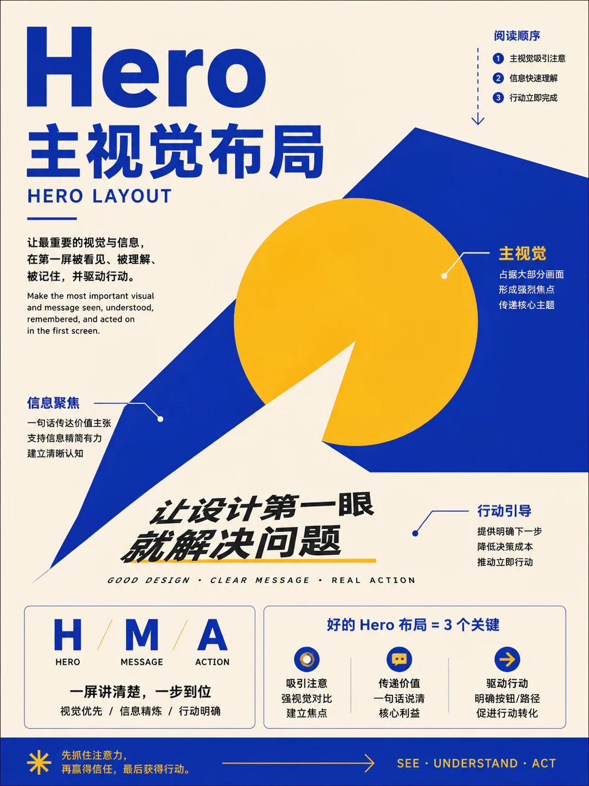

先拦住视线
「占据大部分画面 / 形成强烈焦点 / 传递核心主题」
图形处理速度远快于文字。主视觉不必是昂贵摄影，也可以是强几何构图（像 289 原海报的钴蓝斜楔与明黄聚光）、真实产品界面或鲜明硬件轮廓——关键在于一眼只有一个主角。
自动轮播触发横幅盲视，用户当成广告跳过
先关掉「轮播干扰」，把主视觉拖回 44%–70%，让信息与行动回到同一屏。
原海报总述：「让最重要的视觉与信息，在第一屏被看见、被理解、被记住，并驱动行动。」 Make the most important visual and message seen, understood, remembered, and acted on in the first screen.
THE H / M / A READING CHAIN
原海报把整张首屏压成三个字母 H / M / A——「让设计第一眼就解决问题」。拆开看，它不是「放一张大图 + 写一句口号 + 摆个按钮」的机械拼盘，而是一条前后相扣的认知接力：缺少任何一棒，前面攒来的注意力都会当场漏光。
「占据大部分画面 / 形成强烈焦点 / 传递核心主题」
图形处理速度远快于文字。主视觉不必是昂贵摄影，也可以是强几何构图（像 289 原海报的钴蓝斜楔与明黄聚光）、真实产品界面或鲜明硬件轮廓——关键在于一眼只有一个主角。
「一句话传达价值主张 / 支持信息精简有力 / 建立清晰认知」
读者停留的那几秒里，心里只有一个问题：「这东西能帮我干什么？」主标题直接报具体利益，副标只留一两行最硬的支撑事实，删掉一切空泛修饰词。
「提供明确下一步 / 降低决策成本 / 推动立即行动」
高对比实底主按钮只留一枚，位置必须稳在首屏折叠线上方；若还有「先看看演示」之类的低门槛需求，退为不抢戏的纯文字次路径即可。
原海报底带写「先抓住注意力，再赢得信任，最后获得行动」。实际做落地页时，信任往往不会自动跟着标题长出来：在主按钮正下方 12–16px 补一行极轻的「减压证明」（例如「免费试用 · 无需绑卡」「已服务 3,200 支团队」或开源许可标），能明显降低点击前的心理门槛。
点下面四种视觉权重排法，看眼球路径如何从顺滑单向变成折返打转。
ORIGIN & EMPIRICAL EVIDENCE
英文 Hero 并非凭空发明的网页黑话。它一路来自两条传统：在剧场与电影片场里，Hero Prop（主角道具）指的是专供特写镜头拍摄、做工最精细的核心物件；商业广告摄影借用了这一叫法，把整支战役里打光最考究的产品主图称为 Hero Shot。
而 Hero 之所以牢牢钉在网页最顶部，则继承自宽幅报纸时代的 Above the Fold（折叠线之上）——报摊叠放报纸时，路人只看得到对折线以上的头版大图与粗黑标题。搬到屏幕时代，虽然鼠标滚轮和触屏早就普及，可访客决定「留还是关」的窗口却被压缩得更短了。
点选每个时间刻度，查看经过核实的论文、可用性著作与性能标准。
FOUR ARCHETYPES ACROSS VIEWPORTS
主视觉布局不是只有「一张全屏风景图中间浮两行白字」。不同产品的视觉素材不同，真正经得起考验的骨架主要有四种——而且同一套骨架，在 1440 桌面、13 寸矮笔记本和 390 手机上的折叠线位置截然不同。如果首屏需要并列展示多项功能模块而非聚焦单一核心，改看 272 便当盒布局；首屏之下紧跟图文配对说明时，常衔接 288 媒体对象布局。
TEXT OVER IMAGE & LCP SPEED
全出血主视觉最常见的两种死法都在工程落地这一步：一是文字直接压在主图高光处，对比度掉到 2:1 以下；二是把 3 MB 主图丢给 loading="lazy"，拖慢 LCP 渲染，让用户盯着白屏等到失去耐心。下面用实算的 WCAG 2.1 相对亮度公式直接试四种遮罩方案。
<link rel="preload" as="image" href="hero.webp" fetchpriority="high">
<img src="hero.webp" width="1600" height="900"
fetchpriority="high" decoding="async">
/* 切忌写 loading="lazy"，高度用 min(86svh, 760px) 避开假底部 */WHEN NOT TO USE A HERO
主视觉布局擅长拉新、介绍单一核心价值、促成明确转化。一旦产品的使用场景变成高频重复操作或目标检索，硬套巨幅 Hero 反而会变成每天挡路的障碍物。点选下面四类真实场景查看首屏预算分诊：
SPOT THE SINGLE BROKEN LINK
某款「云端字体协作工具」做了四版首屏草案。它们的视觉风格、配色与字号同样克制干净，每两版之间只差一个结构变量。挑出唯一同时满足主视觉、信息聚焦与行动引导的那一版：
ORIGINAL POSTER & KEYWORDS
